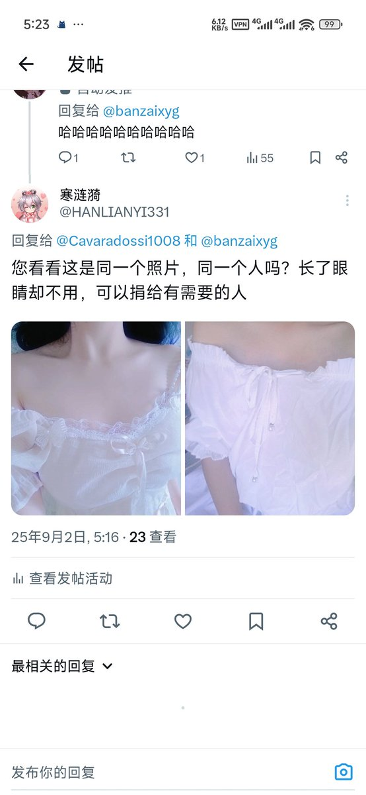
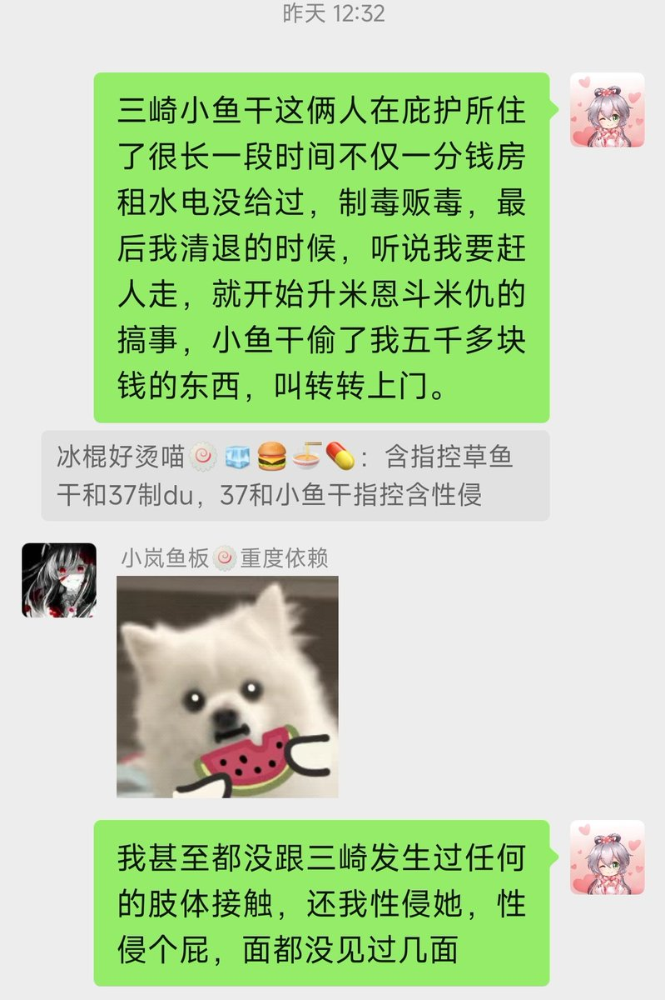
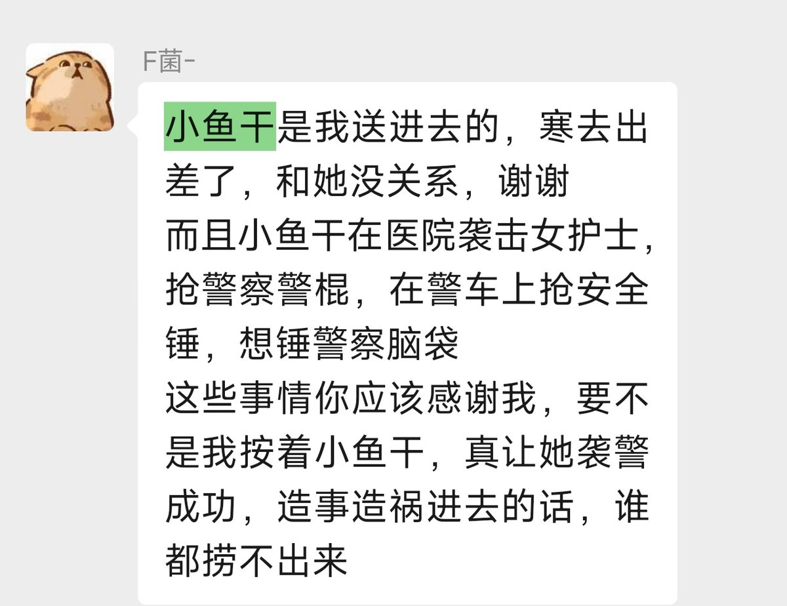

我来说一下图中这位是什么成色：
1.在武汉庇护所居住期间制毒贩毒（包括但不限于右美沙芬注射剂）
2.殴打医院护士，同时试图用武器重伤警察（被我对象阻止）
3.盗窃大量物品，价值超过五千元
4.在武汉庇护所药物滥用，滥用几十片氯硝西泮后服用亚硝酸钠，被我对象报120抢救，事后还赖掉了抢救费

1.在武汉庇护所居住期间制毒贩毒（包括但不限于右美沙芬注射剂）
2.殴打医院护士，同时试图用武器重伤警察（被我对象阻止）
3.盗窃大量物品，价值超过五千元
4.在武汉庇护所药物滥用，滥用几十片氯硝西泮后服用亚硝酸钠，被我对象报120抢救，事后还赖掉了抢救费



经过一次搬家，最终确认一个小米开放式耳机（未开封），苹果笔等相关配件，全新cos服等物品都失窃了。失窃物品一般是“小而贵”的物品，目前（仅发现）的总损失价值至少四千元以上。嫌疑人共四人，包括三崎，小鱼干等。 https://t.co/zducGgWNBq